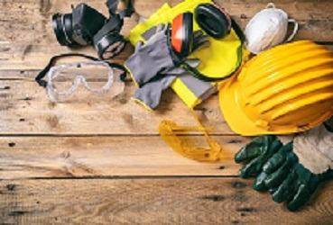
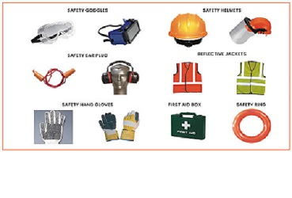
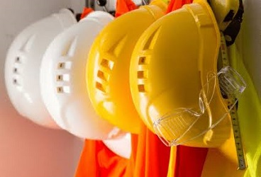

SAFETY
Safety is a primary ingredient of our work ethic. We believe that every accident is preventable, and we embed this philosophy into every project we execute through a combination of technical field procedures and ongoing training programs.
Our safety and health approach includes safety systems, on-site and off-site training, and a behavior-based safety program. Our commitment to zero accidents extends to every aspect of a project, from planning to completion, and from management to every worker on site. Every employee has stop-work authority-if it isn't safe, don't do it.
We also work closely with our subcontractors and construction partners to maintain the highest standards of safety and health. Our dedication to safety helps protect workers, clients, visitors, and the surrounding community while delivering quality construction projects on time.


